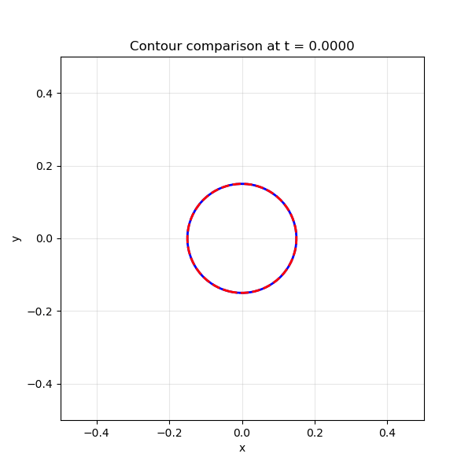
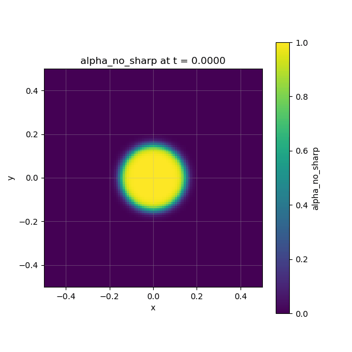
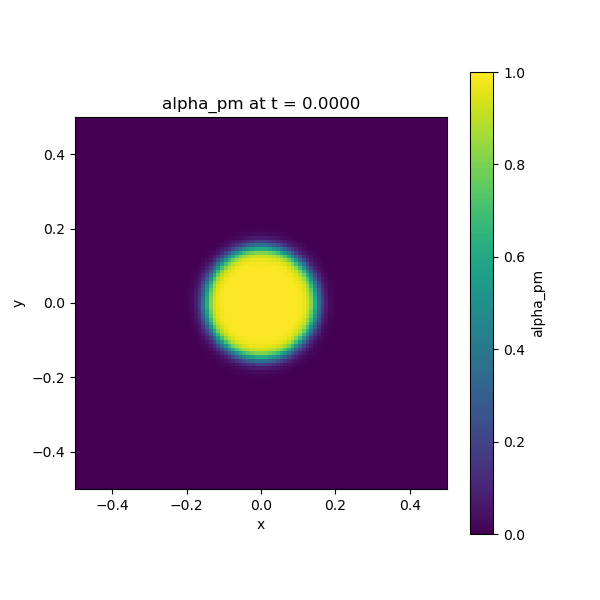

tanh_circle_10_rev_compare
Description
Compares no sharpening vs PM sharpening over 10 revolutions using the contour_compare_gif monitor and per-field sharpening control. Two fields share the same initial condition but only one has sharpening enabled.
How to run
python run.py unit_tests/tanh_circle_10_rev_compare.yamlThe YAML lives in unit_tests/; each run copies it into the timestamped run folder (original remains for easy re-running).
Config summary
- Domain: 2D cell-centered, x,y ∈ [-0.5, 0.5], 100×100 points (dx = dy = 0.01)
- Time: dt = 0.01, 2000 steps (T = 20 s, 10 revolutions)
- CFL: 0.5
- Velocity: (0.5, 0.0)
- Fields:
alpha_no_sharp: radial tanh, sharpening: falsealpha_pm: radial tanh, sharpening: true (PM)
- Solver: upwind_2d; Timestepper: euler
- Sharpening: PM, eps_target 0.02, strength 1.0 (per-field control)
- Monitors: console, contour_compare_gif (every 200 = 11 frames), individual GIFs
Key features demonstrated
- Per-field sharpening: Each field can override the global sharpening setting with
sharpening: true/false - contour_compare_gif: Overlays contour lines of multiple fields on the same plot
Output
Contour comparison GIF (11 frames, 1 per revolution). Blue solid = no sharpening, red dashed = PM sharpening.

Individual field GIFs
No sharpening (alpha_no_sharp):

PM sharpening (alpha_pm):
